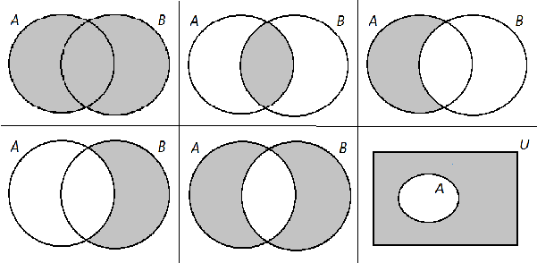

Probabilidad
Introducción
La mayoría de los experimentos no son de carácter determinístico, es decir, no conocemos de antemano el resultado del mismo, razón por la cual, es necesario medir la posibilidad de ocurrencia de un evento en presencia de incertidumbre. A esta medición se le llama probabilidad.
Además de medir la incertidumbre de un evento, a partir de la probabilidad es posible construir modelos que permitan describir las características de una variable en una población, y a partir de éstos, hacer inferencias sobre los parámetros del modelo con base en los datos de una muestra.
Por lo tanto, resulta de vital importancia el conocimiento de los conceptos básicos de probabilidad, pues los modelos de probabilidad, son la base de la construcción de los intervalos de confianza y de los estadísticos de prueba en el juzgamiento de hipótesis.
Teoría de conjuntos
A continuación una breve descripción de las operaciones entre conjuntos y su notación, dado que son de vital importancia en la teoría de probabilidad.
Sean \(\Omega\) el conjunto universal, \(A \in \Omega\) y \(B \in \Omega\):
- Complemento: \(A^c=\Omega-A=\{x \in \Omega: x \notin A\}\)
- Unión: \(A \cup B=\{x \in \Omega: x \in A\) o \(x \in B\}\)
- Intersección: \(A \cap B=\{x \in \Omega: x \in A\) y \(x \in B\}\)
- Diferencia: \(A-B=\{x \in \Omega: x \in A\) y \(x \notin B\}\)
- Leyes de Morgan: \((A \cup B)^c=A^c \cap B^c\) y \((A \cap B)^c=A^c \cup B^c\)

Conteo
Dado que el cálculo de probabilidades implica contar en algunas situaciones prácticas, a continuación se presentan algunos principios del conteo. En particular vamos a contestar la siguiente pregunta: para \(k<n\), ¿de cuántas formas se pueden seleccionar \(k\) elementos de \(n\) ?
Principio multiplicativo del conteo
Sean \(E_1, E_2, \ldots, E_m\) conjuntos (procesos). Si:
- \(E_1\) ocurre de \(n_1\) formas
- \(E_2\) ocurre de \(n_2\) formas
- \(\vdots\)
- \(E_m\) ocurre de \(n_m\) formas
entonces, el número de formas en que puede ocurrir \(E_1 \cap E_2 \cap \ldots E_m\) es \(\prod_{j=1}^m n_j\).
Ejemplo
En consulta, un médico determina que su paciente debe tomar medicación para dos condiciones, para la primera tiene 3 opciones de medicamentos y para la segunda 5 , ¿cuántas posibles prescripciones diferentes puede hacer el médico?
- Medicamento \(1: n_1=3\)
- Medicamento \(2: n_2=5\)
Así, el número de prescripciones es: \(n_1 * n_2=3 * 5=15\). Nota: al resultado de la multiplicación de los \(n\) primeros enteros se le llama \(n\)!,
\[ 1 \times 2 \times \ldots \times n=n ! \]
Por definición \(0 !=1\).
Para \(k<n\), ¿de cuántas formas se pueden seleccionar \(k\) elementos de \(n\)?
1 - Si el orden importa y no es posible tener repeticiones
La operación resultante se llama permutación sin repetición: \[ P_k^n=n \times(n-1) \times \ldots \times(n-(k-1))=\frac{n !}{(n-k) !} \]
2 - Si el orden importa y es posible tener repeticiones
La operación resultante se llama permutación con repetición: \[ n^k=n \times n \times \ldots \times n \]
3 - Si el orden no importa y no es posible tener repeticiones
La operación resultante se llama combinación: \[ \left(\begin{array}{l} n \\ k \end{array}\right)=\frac{n !}{k !(n-k) !} \]
Ejemplo
1 - ¿De cuántas maneras se puede ordenar la secuencia ATGC?
\[ P_4^4=\frac{4 !}{0 !}=24 \] . . .
2 - ¿Cuántas posibles claves de 3 dígitos se pueden obtener con los números de 1 a 5 ?
\[ 5^3=125 \]
- ¿De cuántas formas se pueden seleccionar 3 personas en un grupo de 20?
\[ \left(\begin{array}{c} 20 \\ 3 \end{array}\right)=\frac{20 !}{3 ! 17 !}=1140 \]
Ejercicios
- En un grupo de 15 hombres y 18 mujeres, ¿de cuántas formas se pueden seleccionar 5 hombres y 6 mujeres?
- Determinar cuántos posibles resultados tiene el Baloto.
Espacio de probabilidad
Para definir un espacio de probabilidad es preciso definir algunos conceptos previamente:
1 - Experimento aleatorio:
Un experimento aleatorio es cualquier experimento que satisface las siguientes condiciones: - Todos los posibles resultados del experimento son conocidos antes de ejecutarlo. - El resultado de cualquier ejecución del experimento no se puede conocer de antemano.
2 - Espacio muestral \(\Omega\)
El espacio muestral es el conjunto de todos los posibles resultados de un experimento aleatorio.
3 - Eventos
Cualquier subconjunto del espacio muestral se llama evento aleatorio. Cuando un evento tiene un solo elemento se denomina evento elemental o simple. El conjunto \(\Phi\) se llama evento imposible, que nunca sucede, y el conjunto \(\Omega\) se llama evento seguro, que siempre sucede. Si \(A\) es un evento y el resultado observado del experimento aleatorio es un elemento de \(A\) significa que el evento \(A\) ha sucedido.
Ejemplo
Considere un estudio longitudinal con 3 pacientes.
- Experimento: contar el número de pacientes, entre los 3 , que desarrollan el desenlace durante el periodo de seguimiento.
- Espacio muestral: \(\Omega=\{0,1,2,3\}\).
4 - Medida de probabilidad:
Una medida de probabilidad es una función que le asigna un número entre 0 y 1 a los eventos de un experimento aleatorio: \[ A \longrightarrow P(A) \] y que satisface: - \(P(A) \geq 0\) - \(P(\Omega)=1\) - Si \(A_1, A_2, \ldots\) son eventos mutuamente excluyentes incluidos en \(\Omega\), entonces \[ P\left(\bigcup_{i=1}^{\infty} A_i\right)=\sum_{i=1}^{\infty} P\left(A_i\right) \]
Observe que la probabilidad de un evento \(A\), denotada con \(P(A)\), es una medida de la incertidumbre relacionada con la posibilidad de la ocurrencia del evento \(A\).
Asignación clásica (frecuentista) de probabilidades
Se supone que un experimento aleatorio se repite \(n\) veces y que un evento \(A\) asociado con estos experimentos ocurre exactamente \(k\) veces. Entonces, la frecuencia relativa de \(A, h_n(A)\), se define como la proporción entre la cantidad de veces que ocurre el evento \(A\) y el número total de repeticiones del experimento aleatorio:
\[ h_n(A)=\frac{k}{n} \]
La frecuencia relativa de un evento \(A\) correspondiente a un “gran número” de repeticiones de un experimento aleatorio es igual a la probabilidad del evento \(A\), es decir
\[ P(A)=\lim _{n \rightarrow \infty} h_n(A) \]
- La probabilidad obtenida de esta manera es únicamente una estimación del valor real.
- Cuanto mayor sea el número de experimentos, tanto mejor será la estimación de la probabilidad.
- La validez de esta estimación depende de que las condiciones en que se realiza el experimento sean “idénticas”.
Ejemplo
Considerar las siguientes situaciones:
- Una máquina produce 100 tubos de ensayo cada 5 minutos. Esta máquina empieza su funcionamiento a las 8:00 a.m. y termina a las 8:00 p.m., hora en la que se toma una muestra de tamaño \(n\) del lote y se revisa el número de tubos de ensayo defectuosos. Si el número de tubos defectuosos es menor que una cantidad predeterminada por el departamento de control de calidad, entonces la producción del día se puede distribuir, de otra manera no es posible. Teniendo en cuenta que no hay cambios en el programa de producción de un día a otro: ¿Cuál es la probabilidad de que la producción de un día no se pueda distribuir? ¿Es correcto estimar la probabilidad mediante la frecuencia relativa?
- Un complejo de oficinas se jacta de tener uno de los mejores controles de seguridad. Se quiere corroborar lo anterior estimando la probabilidad de que una persona que no trabaje en la oficina pueda pasar sin tener que anunciarse en recepción. ¿Cómo se calcula esta probabilidad? ¿Es correcto estimar la probabilidad mediante la frecuencia relativa?
En la situación a., si se toman los registros de producción durante cierto número de días, entonces se puede calcular la probabilidad de que la producción de un día no se pueda distribuir mediante: \[\frac{\text{No. de días en los que la producción no se pudo distribuir}}{\text{No. de días en los que se tomaron los registros}}\]
Además, es correcto estimar esta probabilidad mediante el método frecuentista, porque se considera que no hay cambios en el programa de producción de un día a otro. En la situación b., si se toman los registros de seguridad de un periodo determinado de tiempo, entonces se puede calcular la probabilidad de que una persona que no trabaje en la oficina pueda pasar sin tener que anunciarse en recepción, como sigue: \[ \frac{\text { No. de personas que ingresaron al complejo sin tener que anunciarse y que no trabajan allí}}{\text { No. de personas que entraron al complejo sin trabajar en él}} \]
En este caso, es correcto calcular esta probabilidad por medio de la frecuencia relativa siempre y cuando las condiciones de seguridad no varíen drásticamente de un día a otro.
Algunas propiedades de una medida de probabilidad
Sea \(\Omega\) un espacio muestral no vacío, \(A\) y \(B\) eventos aleatorios incluidos en \(\Omega\) y \(P()\) una medida de probabilidad sobre \(\Omega\). Entonces se satisfacen las siguientes propiedades:
- \(P(\phi)=0\)
- \(P\left(A^c\right)=1-P(A)\)
- Si \(A \subset B\), entonces \(P(A) \leq P(B)\)
- \(P(A-B)=P(A)-P(A \cap B)\)
- \(P(A \cup B)=P(A)+P(B)-P(A \cap B)\)
Ejemplo
Sean \(A, B\) y \(C\) eventos tales que \(P(A)=0.50, P(B)=0.26, P(C)=0.55, P(A \cap B)=0.15\) \(P(A \cap C)=0.25, P(B \cap C)=0.15\) y \(P(A \cap B \cap C)=0.05\). Con base en esta información, calcular las siguientes probabilidades: \(P(A \cup B), P\left(A \cap C^C\right), P\left(A^C \cup C\right)\).
Aplicando las propiedades se obtiene que \[ P(A \cup B)=P(A)+P(B)-P(A \cap B)=0.50+0.26-0.15=0.61 . \]
\(P(A)=0.50, P(B)=0.26, P(C)=0.55, P(A \cap B)=0.15\) \(P(A \cap C)=0.25, P(B \cap C)=0.15\) y \(P(A \cap B \cap C)=0.05\)
Además, \(P(A)=P(A \cap C)+P\left(A \cap C^C\right)\) de donde \[ P\left(A \cap C^C\right)=P(A)-P(A \cap C)=0.50-0.25=0.25 . \]
\(P(A)=0.50, P(B)=0.26, P(C)=0.55, P(A \cap B)=0.15\) \(P(A \cap C)=0.25, P(B \cap C)=0.15\) y \(P(A \cap B \cap C)=0.05\)
Por otra parte, utilizando las leyes de Morgan se concluye que \[ P\left(A^C \cup C\right)=1-P\left(\left(A^C \cup C\right)^C\right) \] \[ =1-P\left(A \cap C^C\right)=1-0.25=0.75 . \]
Teoremas básicos de probabilidad
Teorema aditivo
El teorema aditivo está relacionado con la probabilidad de la unión de eventos, así:
En particular, para \(m=3\)
\[ P\left(A_1 \cup A_1 \cup A_3\right) = P\left(A_1\right)+P\left(A_2\right)+P\left(A_3\right) \]
\[ -P\left(A_1 \cap A_2\right)-P\left(A_1 \cap A_3\right)-P\left(A_2 \cap A_3\right)+P\left(A_1 \cap A_2 \cap A_3\right) \]
Probabilidad condicional
La probabilidad condicional es una medida de probabilidad definida por:
\[ P\left(A_i \mid A_j\right)=\frac{P\left(A_i \cap A_j\right)}{P\left(A_j\right)} \]
siempre que \(P\left(A_j\right) \neq 0\). Dado que la probabilidad condicional también constituye una medida de probabilidad, cumple las propiedades de una medida de probabilidad.
Por ejemplo:
- \(P\left(\phi \mid A_j\right)=0\)
- \(P\left(A_i \mid A_j\right)=1-P\left(A_i^c \mid A_j\right)\)
- \(P\left(A_i \cup A_k \mid A_j\right) = P\left(A_1 \mid A_j\right)+P\left(A_k \mid A_j\right)-P\left(A_k \cap A_k \mid A_j\right)\)
Teorema multiplicativo
El teorema aditivo está relacionado con la probabilidad de la intersección de eventos.
- En general, se tiene que: \[ P\left(A_i \cap A_j\right)=P\left(A_i \mid A_j\right) P\left(A_j\right) \]
- Si \(A_i\) y \(A_j\) son eventos independientes, entonces: \[ P\left(A_i \cap A_j\right)=P\left(A_i\right) P\left(A_j\right) \]
Teorema de la probabilidad total
El teorema de la probabilidad total se utiliza cuando se quiere encontrar la probabilidad de un evento que se encuentra “repartido” en las partes de una partición.
Sea \(E_1, E_2, \ldots, E_m\) una partición de \(\Omega\), es decir, \(E_1, E_2, \ldots, E_m\) es una colección de subconjuntos de \(\Omega\) tales que: \[ \begin{gathered} \bigcup_{i=1}^m E_i=\Omega \\ E_i \cap E_j=\phi, \quad i \neq j \end{gathered} \]
Entonces, la probabilidad de ocurrencia de un evento \(A\) se reparte en la partición de la siguiente forma: \[ \begin{aligned} P(A) & =P\left(A \cap E_1\right)+P\left(A \cap E_2\right)+\ldots+P\left(A \cap E_m\right) \\ & =P\left(A \mid E_1\right) P\left(E_1\right)+P\left(A \mid E_2\right) P\left(E_2\right)\\ &\quad\quad\quad\quad+\ldots+P\left(A \mid E_m\right) P\left(E_m\right) \\ & =\sum_{i=1}^m P\left(A \mid E_i\right) P\left(E_i\right) \end{aligned} \]
Teorema de Bayes
El teorema de Bayes es ampliamente utilizado en epidemiología, especialmente en la evaluación de las características de pruebas diagnósticas. En el teorema parte de la probabilidad a priori de la ocurrencia de un evento, \(P\left(E_k\right)\), para calcular su probabilidad a posteriori, \(P\left(E_k \mid A\right)\). \[ P\left(E_k \mid A\right)=\frac{P\left(A \mid E_k\right) P\left(E_k\right)}{\sum_{i=1}^m P\left(A \mid E_i\right) P\left(E_i\right)} \]